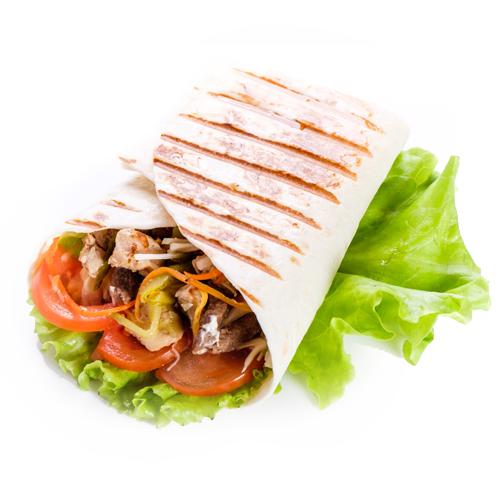
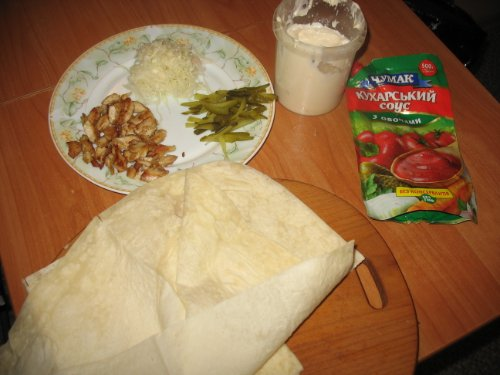
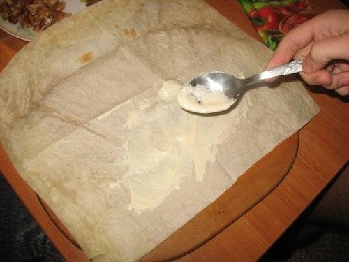
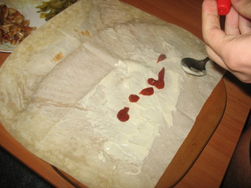
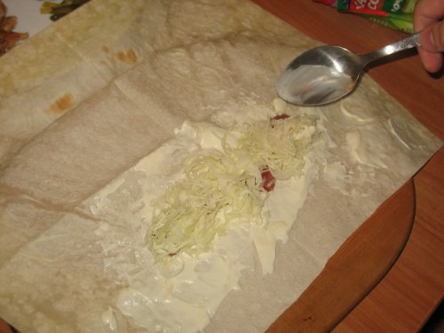
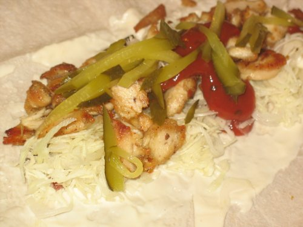
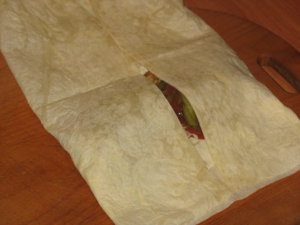
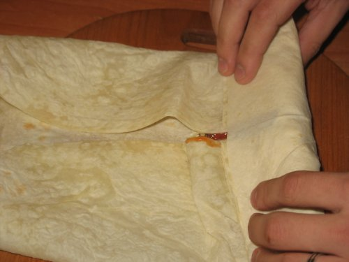
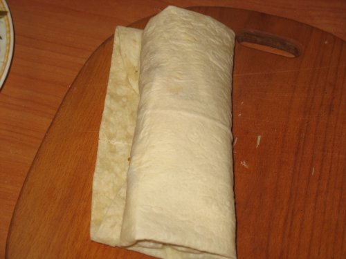

РЕЦЕПТ: Шаурма в домашних условиях
многие не доверяют качеству шаурмы, которую можно купить в различных заведениях, и правильно делают.
Гораздо лучше приготовить это блюдо самому, и основной затык здесь связан с правильным заворачиванием шаурмы.

тонкий лаваш
куриная грудка
помидор
огурец ( свежий или маринованный )
салат пекинский
майонез, сметана или греческий йогурт
растительное или оливковое масло
соль, перец, приправы по вкусу.
Что делать дальше?
- Куриное филе нарезаем ломтиками или полосками. Затем нужно слегка сбрызнуть его маслом и добавить приправы.
Даём настояться минуты три-четыре и обжариваем до хрустящей корочки 7-10 минут.
- Салат и огурцы нарезаем соломкой, помидоры — полукольцами.
- Готовим соус: смешиваем пару ложек майонеза и сметаны, добавляем пропущенные
через чеснокодавилку пару зубчиков чеснока, приправляем солью и перцем по вкусу.
- Лаваш делим на две части, центральную — смазываем соусом.
Затем выкладываем салат, помидоры, курицу, потом снова салат, помидоры и смазываем сверху соусом.
- Крепко сворачиваем, загибаем края и доворачиваем до конца лаваша.
И, наконец, разогреваем или поджариваем на разогретой сковороде до образования золотистой корочки.
Как правильно заворачивать шаурму?
Вот пошаговая инструкция по заворачиванию шаурмы в картинках:







<
Price - $
Համեցեք նորից
կապնվելու համար
Mail: Manoyan@mail.ru
Tel: 011111111
Շնորհակալություն